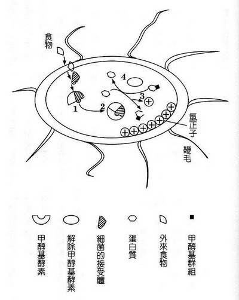

从微生物学试证众生等有
冯冯
星径神殿 / 誊录
赵州从谂以名偈“狗子佛性”打破有与无之执见。此一禅语公案，成为千古美谈，亦是争论不休的禅门轶事。
五灯会元载曰：
僧问：“狗子还有佛性也无？”
师曰：“无！”
僧曰：“上自诸佛下至蝼蚁，皆有佛性，狗子为什么却无？”
师曰：“为伊有业识性在。”
又有僧问:“狗子还有佛性也无？”
师曰：“有。”
僧曰：“既有佛性，为什么擅入这个皮袋里？”
师曰：“为他明知故犯！”
浅译成现代口语如下．
“有一位和尚问赵州从论法师：‘小狗有没有佛性呢？’
从论法师答：‘没有。’
那位和尚就说：‘上至诸佛，下至虫子蚂蚁，都是有佛性的，法师为什么说小狗没有佛性呢？’
赵州答：‘因为小狗有业识性存在。’ （作为障碍）
又有一位出家人问：‘小狗到底有没有佛性呢？’
赵州和尚答：‘有的。’
这一位出家人说：‘小狗既然有佛性，为什么还会来托生入这个臭皮囊里做小狗呢？’
赵州和尚答：‘它是明知故犯！’
赵州前后两次答案，一次说小狗无佛性，第二次说有：表面上看来是前言不对后语，互相矛盾，实质上并无矛盾，而是显示真理的一体两面。这是赵州借此两个答案，来打破一般人的“有”与“无”的我执之见。当时的学佛人，一些太执着于“有”观，另一些又太执着于“无”。执“有”，执“空”，各持极端。在印度的部派佛教时代如此，在中国亦如此。
如果我的领悟没错误，我猜想赵州的用意可能源出于“应无所住而生其心”这一句，庶几也有些趋于“中观”。也许就是开示勿执空、勿执有。
这段“狗子佛性”，千古以来，不少名家予以阐释，珠玉当前，末学还敢班门弄斧吗？这上面的拙译愚析，浅陋得很。写出来，只是要表明，此段轶事给予我的印象而已。我注意到众生界，有情无情，莫不有佛性。故此僧言:“上至诸佛下至蝼蚁，皆有佛性。”我又注意到:“伊有业识性在”与“明知故犯”，对佛性的影响。众生界万物各皆有“识”，但是只有能转识成智，才显佛性，否则业识仍在。
形而上哲学，非我所长，不敢妄论；对于现代科学知识，则是我的兴趣所在。每读佛学经论，总不免以我有限的新科学浅知，来揣摩印证佛学。因为佛学本来就是综合科学哲学的学问。
从“狗子佛性”的轶话，想到许多。我目前正在筹备以遗传基因DNA的资料，来印证佛说众生平等。未敢下笔，踌躇之余，狗子有无佛性的禅诸公案引起我重温旧念；到底众生界有情与无情是否都有佛性？怎样从科学印证？
佛性显然须经由转识成智才可显现。万物众生均有识，也各有若干程度不等的智慧。我这愚见，大概不致太错谬罢？
刚巧美加各大电视网在一九八四年四月底播映的科学新闻，有这么一段：“植物也有情感反应。”兹略述如下：
美国加州大学（洛杉矶）一位生物学家巴斯特博士（Dr.Baxter）公布了一项实验。他与数位心理学家，将特别设计的记录仪器，连接在实验室内的几盆盆景植物的茎叶上面，另一端连接类似“心电记录机”（EKG）及“脑波记录机”（EEG）的电子仪器，可以自动的将植物的体温、颤动、热能放射等等资料，记录在一卷自动旋转的图表上面，八线指针分别记下详细的波动。
巴斯特博士等科学家从累积的纪录中发现：植物并非如人们想象的没有情感；相反地，植物也会情绪激动。
举例说，当巴斯特播放柔和的轻音乐之时，各盆植物的波动也随之而柔和，图表上出现的各线波动，峰谷平均而低平，有一定的韵律。当换之以古典交响曲之后，各盆植物的波动也随着音乐气氛而发生变化。尖锐的笛声或急奏的小提琴，会使植物反应激烈，谷峰急剧波动，成为尖锐的峭峰；沉重的定音鼓亦引起植物反应的波峰大起大落。
或者这只是由于音波的刺激而引起，似乎仍不能证明植物有情感及有意识。于是巴斯特与各科学家，又控制室内的温度与光线，以视植物的反应。他们发现：植物对于光与热的反应显示的波动模式，与听音乐的反应不相同。可是真正的发现还在后头。
巴斯特发现：对植物表示关怀好感的态度，会获得植物鼓舞喜悦的波动反应，波峰平稳而活跃轻快。有人认为这是由于人类呼出的二氧化碳被植物吸入所致。但是，当人对植物暴躁叱喝责骂之时，所呼出的二氧化碳为量或者更多，而植物反应的波动，却起了急剧的、急促的反应，仪器上急急画出了一连串慌慌张张的波浪。
或者这也只可视为人的喜怒声浪不同所引起的不同反应？
于是科学家们戴上隔音面具，不以发出声音来表示喜怒，只用注视来表示对植物的态度。奇怪的事出现了！当人慈爱温和的注视之时，植物的反应波峰也随之而温和平稳，出现柔和缓慢的律动，当人换以凶恶之心向植物注视：“我将要砍掉你！我将要连根拔起你！”植物的反应波动峰谷立刻就大起大落，图表上出现急剧短促的谷与峰，发生巨大的震动波浪。
这就符合了“叔丁格定律”（见拙作“科学家对心力的追寻”）。当人注视大树，心生砍掉大树之念时，大树就面临被砍与否的存亡生死的选择。换言之，人心生砍树之念，大树是感觉得出来的，这种心力的接触，比光速还快（见拙作“光远不是最快”）。
巴斯特博士等认为，这仍不足以证明植物有情感反应，于是进行另一种实验。
巴斯特博士在几盆植物的旁边，添置了一座玻璃水族楠，箱内饲养十多尾金鱼。自然保持着实验室内标准的光线、温度与湿度等条件。他发现植物似乎对于金鱼的为伴颇有好感，植物反应波动显示出此平常更活泼轻松愉快的节奏。这并不能归功于鱼缸的氧气冒出，因为鱼缸是特制密封，不容氧气溢出空中，氧气或二氧化碳均另有导管透出室外。而且鱼缸亦未引起室中温度的丝毫变化。
移开鱼缸之后，植物的情绪反应竟然低落了，波动节奏显得失去生气活力。鱼缸搬回以后，植物似乎又愉快了起来，欣欣向荣。
好戏还在后头。巴斯特博士故意放毒药在鱼缸中，使金鱼慢慢中毒死去。一夜之间，十多尾金鱼全部陆续死去了。巴斯特检视纪录图卷，发现这一夜植物的反应波动，发生空前的巨大激动震荡，波峰与波谷特别巨大急剧，好像遭了地震一般；而这一夜并无地震，这一夜的一切条件如常不变。植物反应波动由大幅度的震动而逐渐演变为毫无生气活力的缓滞波浪。
金鱼之死亡竟会引起了植物的哀悼与悲伤？这是难以令人相信的。可是，巴斯特博士等人多次反覆实验，证明了植物确有此种反应！他在电视上说：“植物也是有情感反应的，植物并非毫无情感。人类对于自然界的了解还仅仅是起步而已，还有更多的自然真象等待我们去发现！”
那几盆热带植物居然会哀悼金鱼同伴之死，能不愧煞人吗？
这令我忆起奥国大作曲家孟德尔逊的歌谣：“这是长夏仅余的玫瑰，孤单单地感伤悲！”
儿时常唱此歌，至今中年，才领略得歌中的情感！试拟想那几盆实验室内的热带植物，孤单凄凉，不就似那“长夏最后的玫瑰”么？金鱼为伴，也聊慰孤独之苦啊！金鱼之死，怎不令植物为之悲哀？
君莫笑我痴，上面说的是从事实的推断而已。
植物能悲悼同伴金鱼之死，说明植物不但有情感，也识生死。能识生死，有感觉，应该可算也有“识”。说它也有佛性，未兔言之过早；但是，慈悲原是佛性的一环，植物的同情心与悲悼之忱，或者也可勉强说为植物也有些许佛性吧？至少，从今以后，我不敢再视植物为“无情生”了。
从这项实验报告看来，似乎可以推论：有生必有情，有生亦皆必有识。有情生与无情生的界说，或者需要重新订定罢？
我不知道植物的“识”，能否视为“于境了别”的“识”（Parij?na）：但是，我认为可视为“意识”（Consciousness）的一种。植物此种本能的意识，自然不能比人类的“六识”、“八识”，更不能仰望“莫如识”。不过，也是不容忽视的一种意识。
其实，不但植物有识，就是最低等的生命也都有识。
人类自许为“万物之灵”，人类的脑子一共有一千四百亿个脑神经细胞在不停作用着。人类往往自称为唯一会思想的生物，也自诩为唯一的有情感的动物。诗词中常说：“人非木石，岂能无情？”此语放在最新科学的电子显微镜下，已经失去其意义。像上面讲的实例，就证明了草木也有情有识。
科学还发现了，甚至于最微末不足道的生命，例如细菌，也“有情”，也“有识”，也会思想。
一个细菌，无疑是生命形态中最微末的一种了；它只有一个单细胞，其细胞核内只有一个遗传基因DNA，它的生命只有数百分之一秒钟，更不及蜉蝣之“朝生暮死”（见庄子）。在人类眼中看来，细菌那会思想？它没有脑子，也没有心脏，怎会思想？又怎会有识？更别谈有情了！
可是，细菌的确有识、有情，也会思想。而且这些不是“本能”一辞所能解释的。
细菌也会有思想力吗？
让我们看看西方尖端科学家们的实验报告罢！
早在公元一八八三年，即是距今一○三年前，德国著名生物学家威咸．飞法尔（Wllhelm Pheffer）公布一项实验报告。他在细微的一组试管内分别置放不同的物质，一种是有杀菌作用的药品；另一堆是吸引细菌的美味食物渣浮。然后把一批细菌放入管内。他从显微镜中观察到令人惊异的情形：细菌成批地舍近就远，游动趋向食物，而且知道回避挡路的杀菌药物。
这情形显示细菌具有一种判断力和分别心，而且有适应环境的决断力。显然是思考所产生。说是“本能”，“本能”何尝不是经过思考的反应？
飞法尔的实验报告，并未引起科学界太大的重视，被束诸旧档，直到经过九十年之久，才重新被科学界检出来研究。一九七四年，美国科学杂志刊出微生物化学家（Microbial Biochemists）尤流斯．艾特勒（Julius Adler）与华裔的Wung Wai Tso，两人合作的论文“细菌的决断力”。才又重新引起科学界注意细菌的思想力。
艾特勒与Wung Wai Tso两氏，公布他们对于细菌行为与思考力的研究实验报告。他们采用一种科学定名为E．Coli的大肠菌作为实验。他们发现：伊柯利大肠菌能够判断孰为适合其享用的食物，孰为不利于其生命之危险饵物，又懂得回避含有杀菌药物的美味饵物。这些大肠菌具有分别能力，能够评断“诱饵”未必就是美味可口的食物，驱阻物未必就是毒药。而且，更能够判别外来刺激物质的绝对体积、分量乃至内涵成分，也能估计“刺激物质”的力量大小。
艾特勒与Wung Wai Tso两氏又从实验中发现：细菌在接触外来刺激物质之后，会引发其自身的“变异”（Mutation），以适应环境及应付刺激物质。所谓“变异”，就是细菌本身遗传染色体内的蛋白质发生变化，促成染色体的变异──这些变异过程，在高等动物是需要很多世代才能完成的。但是最低等的原始生物单细胞细菌，因其生命时间太短促，故其变异反应也较迅速，而且较易被发现。
艾氏等科学家发现：遭遇外来物质刺激之后的大肠菌，各有其不同的反应变异。有些大肠菌会改变其染色体的蛋白质，形成变异的接受体（Receptor），来应付接触的“刺激物”（Stimuli）。这种变异的大肠菌，与原来的大肠菌不相同，称为“变异大肠菌”（Mutate E.Coli）此种新“接受体”对于“刺激物”的反应，与未变异阶段的细菌，截然不相同。未变异细菌所兴趣垂涎的某些诱饵“刺激物”，变异大肠菌对之则毫无兴趣。
细菌的这些“接受体”，有感觉、有记忆力、有反应适应力。见附图说明如下：

上图是大肠菌的图解，六角形小粒代表蛋白质（Protein），半月形代表甲醇基酵素（Enzyme-methylation），椭圆形代表解除甲醇基酵素（Enzyme-demethylation），正方形代表甲醇基群组（Methyl Group）。
当外来刺激物质（Stimuli）已与大肠菌接触之时发生如下情形：
此一“刺激物”是大肠菌欢喜吃的食物，进入大肠菌细胞膜之后，大肠菌的“接受体”（以半扇形代表），立即发生感觉反应，它知道这是对它无害而又可口的营养物，它立刻与之结合。
一、细菌的感觉接受体与外来营养物结合。
二、引起细菌内的甲醇基酵素（以半月形代表），与之结合。
三、产生蛋白质的分解变化，放出氢“正子”（Proton），各粒“正子”作为燃料，推动细胞体外鞭毛（Flagela）的活动。随之，另一种酵素“解除甲醇基酵素”（以楠圆形代表），随即来解除蛋白质的分解变化。在这种一先一后的短暂过程之中，显露出暂时的─还原的。
四、细菌的过去形态记录。
细菌体内不但具有可称之为“眼睛与耳朵”一般的“感觉小粒”（接受体），而且还有十多种作用与“脑神经细胞”相似的蛋白质小粒。
这一点己经被美国加州大学相克莱分校的生物化学学家丹尼．柯殊兰（Daniel Koshland）所发现及证实。柯殊兰是当今最有成就的“细菌心力学”研究专家。
细菌也有心力吗？
是的，柯殊兰博士发现：大肠菌及其他细菌都各有其脑筋心力，而且有很不错的记忆力。
柯氏的实验发现：当没有吸引的食物之时，个别大肠菌各自分散游动，漫无目的，并无一定方向。但是，置入一滴食物以后，所有的大肠菌立刻停止乱闯；转而一齐朝着食物的方向前进，而且采取直线前进。
置入的诱饵被消耗已尽，各细菌又漫无目的的乱转乱滚。隔了若干时问之后，再置入一滴诱饵于前一滴的旧址，各细菌记得起先的甜头，纷纷再直线冲来享用。
然后，诱饵又耗尽。各细菌散开。可是不时回到原址探寻有无甜头。之后，再置入一滴物质，内中的食物减半，掺以其他无毒化学物质，各细菌闻风而至；但是，在接触时立即失去兴趣，并不如前时之热烈吞噬。有些细菌竟不住翻跟斗，有些掉头离去。
然后，在原址另置入含有杀菌力量的诱饵。各细菌来到，略一探测，即舍之而他去，纷纷避开。
隔了一段时间，取去毒饵，又隔若干时间，另置入无毒诱饵；可是各细菌仅在遥远之处观望，无一敢趋前，显然颇存戒心。
从这些多次实验观察，细菌显然颇有脑筋，并非吾人想象之原始简单。
以体积而言，一个大肠菌的全部身体，不过只有○点○○○○三九（0.000039）英寸长。而且只有一个细胞，没有所谓心脏与脑子；只有细胞核与一些细微到宛如无物的蛋白质与酵素，它怎么竟有上述那样的脑筋呢？这真是不可思议的事。
让我们再看看细菌。
大肠菌的细胞膜外面有些鞭毛，其状似鞭，因以名之。它们相当于鱼类的鳍，又相当于船桨；但是鞭毛的动作是三百六十度旋转的（倒有些像浙江乌蓬船的摇橹），是推进细菌运动的工具。其原动力来自其根处膜内的“正子”（见上文图解），这些正子都是些氢正子（这情形与吾人所熟知之马达作用并不尽相同，马达是由电子汇成电流所发动，但是细菌的鞭毛是由氢正子发动）。
细菌的鞭毛同时也是触角，平时各根鞭毛四方八面去探触环境，各毛行动并不一致。但是当发现有可口美味食物以后，各根鞭毛突然采取一致行动，和谐一致地旋转，变成推进器，使细菌向着食物冲锋前进。
细菌的细胞膜内，至少有三十种“接受体”，来接受吸入的物质；一二十种不同的酵素，分解或结合外物；又有十多种蛋白质，来作为“资料处理中心”，以决定如何处理外物，如退却？前进？吞噬？放弃？进攻？逃走？经验的教训回忆及未来的安危判别。
这些蛋白质“资料处理中心”，就是那些“接受体”在接触外来物体的刺激时反应变成的，“资料处理中心”随之就发出命令，发动功能相异的两种酵素，去处理已接受得到的外物，酵素就斟酌情况需要，将蛋白质改变或增加一些“甲醇基群组”，或减少一些甲醇基群组，使蛋白质放出氢“正子”来作为动力，推动各根鞭毛。
小小的细菌，功能竟如此复杂！
还有呢？
“甲醇基酵素”与“解除甲醇基酵素”两者的功能迥异。甲醇基酵素是去增加“甲醇基群组”成分小粒，“解除甲醇基酵素”的功能恰巧相反，是去减除甲醇基群组小粒。增加甲醇基的功能较快，灭除甲醇基的功能较慢。在这两种过程先后发生之时，细胞内产生一个奇象──显现出两者交替阶段经过的一段记忆印象，是幻象的，像立体的三重叠影虚影（Hologram），这些记忆的幻影是刚才一秒或几千分之一秒所发生的经历。细胞从这幻影记忆中吸取经验的苦或乐的教训以后，凭之以判别未来遭遇的外物，应取？应舍？细胞这些记亿幻景一闪即逝：但是，记忆已成为细菌终生不忘的意念之一。以后，细菌本身分裂，不断分裂，也将记忆带过去，一直到永远，从而产生不停的适应“变异”（Mutation）。
细菌能够如此从经验与记忆中吸取教训，而产生适应能力，因此可以不断以变异来应付环境，它知道怎样去产生新的酵素来应付对它有害的外物。例如：花柳梅毒细菌的祖先，最初被“六○六”之类药物征服；但是，劫后余生的细菌，从经验和记忆，得到教训，于是改组它的蛋白质与酵素，产生变异，后来就不再怕六○六了。一九四○年代，盘尼西林发明以后，这种抗生素曾经一度消灭了花柳梅毒细菌。但是，曾几何时，梅毒菌等等病菌，好像开过大会交换过情报似的，各皆从经验与记忆来发展改组新的酵素与蛋白质，产生新的抵抗力，再也不怕盘尼西林了！今天新一代又一代的性病病菌，都早已非盘尼西林所能消灭！“爱得死”（AIDS）、“B型疱疹”等等新性病的细菌，横行全世界，医学如此昌明，仍是对之束手无策，荒唐邪淫的后果，也可说是细菌的空前胜利！
是的，细菌是有智力的，有脑筋的，有心力的，也有意识的。自然也有情（同族的细菌并不互相吞噬，真愧煞人类），莫以为细菌是无知无识的最最低等生物！
细菌有没有佛性？我可不敢说！不过，既然它们也有识，也有识别力，我就不敢排除其他也具有佛性的可能性了。
或者，我们从这些研究可以推论出，如果这么最低等的生物也有识有智，为什么较高级的多的小狗会没有佛性？
人自然是万物之灵。狗的智能，在高等动物之中，仅次于猩猩、猴子、海豚，而列为第四位，实在没有什么理由说小狗不可能有佛性？
赵州的禅语公案，我们实不可着其文字相！在华严经疏中，清凉国师说：
华严经初品中云：“无尽平等妙法界，皆悉充满如来身。”
华藏品云：“华藏世界所有尘，一一尘中见法界。”
不思议法品十种解脱中云：“于一尘中，建立三世一切佛法等。”
三世诸佛于一微尘之内，建立三世一切佛法。为什么？
因为佛法慈悲普度众生，甚至于不弃一粒微尘、一滴水中的世界的众生。一粒微尘内的众生就是微生物──微生物也是平等的生命众生之一！微生物、细菌都有识、有念、有脑筋、有心力；但是，仍是无明者居多。有明者不为祸害，利益众生；无明者只知自私自利，贻害众生。所以三世诸佛也要在微尘之中，滴水之内，尽力去建立佛法，度化这些微生物。
华严经卷三“卢舍那佛品”偈句有云：“……普贤菩萨一念起，无量劫行化众生，充满法界现自在，一一微尘中，佛国海安住，佛云遍护念，弥遍覆一切，于一微尘中，佛现自在力，一切微尘中，神变亦如是……。”
华严经所讲的世界尘数，有数种意义．
一、指宇宙多重多元空间的无限数世界，无限数法界。
二、其亦包含无限微尘的微生世界。
华严经疏中，清凉国师说：“因果理事，皆因众生性有，若性非金玉，虽琢不成宝器，良以众生包性德而为体，依智海以为源，但相变体殊，情生智隔，今令知心合体，达本情亡，故谈斯经，以为显示，一以言显示，令其知有，二使其修行，悟入显现……佛以一大事因缘故，出现于世，所谓开示悟入佛之知见，众生等有，故言唯一。”
众生等有，众生平等，佛早已以超越时空的伟大智慧显示，及令其知有，使其修行。“一尘中有三千大千世界”，佛经确是超越时空的科学文献啊！
书名：太空科学核子物理学与佛理的印证
作者：冯冯
出版：天华出版事业股份有限公司